Bc. Ondřej Eder
Softwarový vývojář se specializací na C# a vývoj ve virtuální realitě (Unity). V poslední době se zaměřuji na tvorbu vlastních aplikací s využitím LLM a automatizaci procesů.
Vybrané Projekty
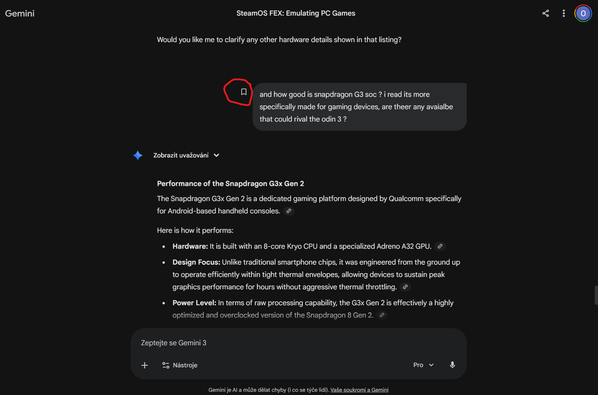
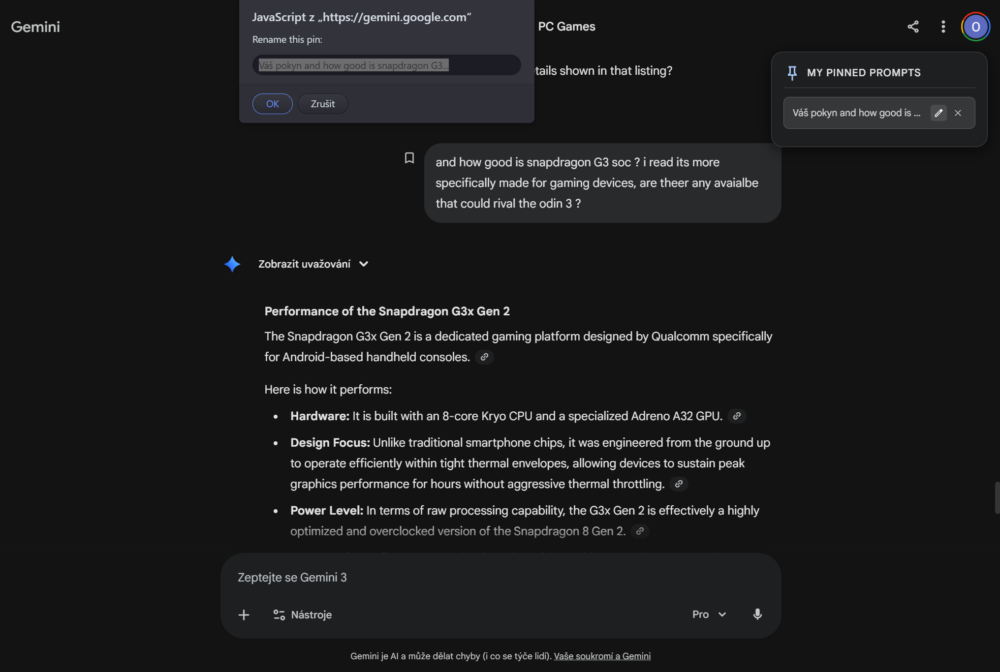
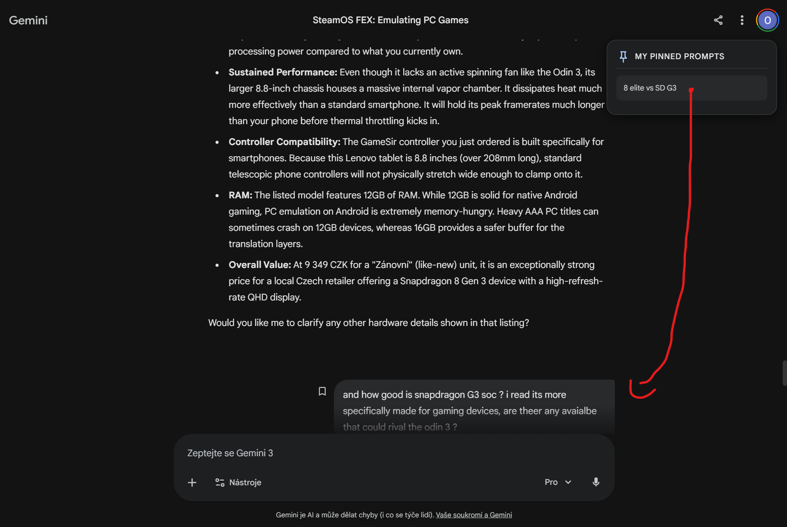
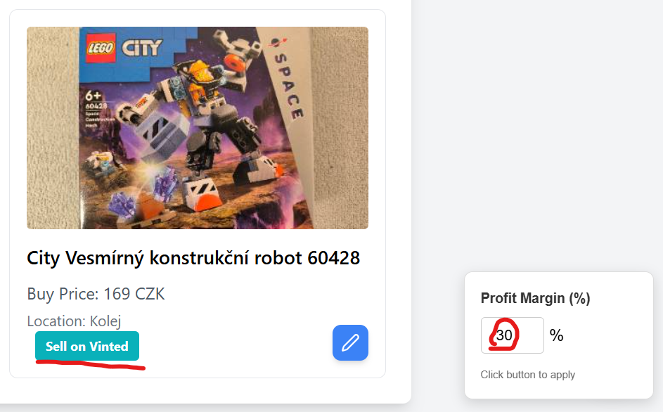
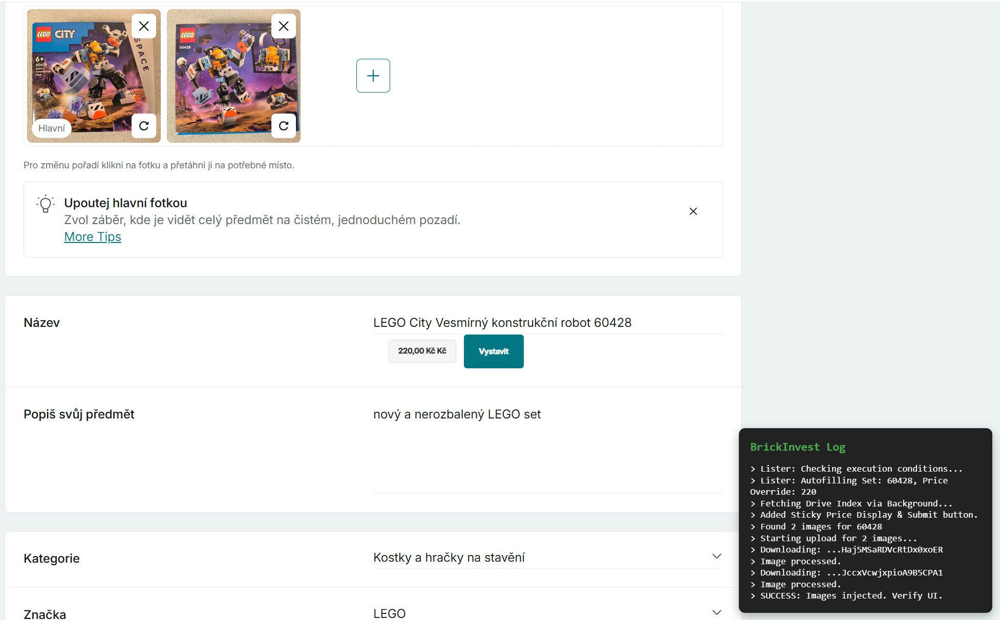
Sada nástrojů pro prohlížeč: automatický listing předmětů na Vinted, rozšíření funkcí pro Gemini chaty pro vytvoření záložek v jednotlivých chatech.
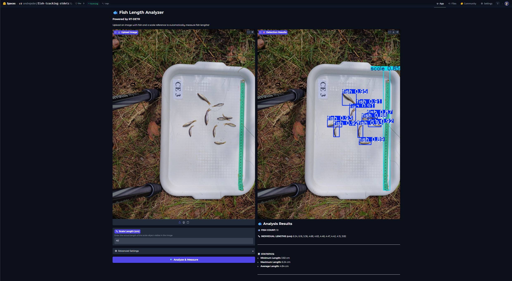
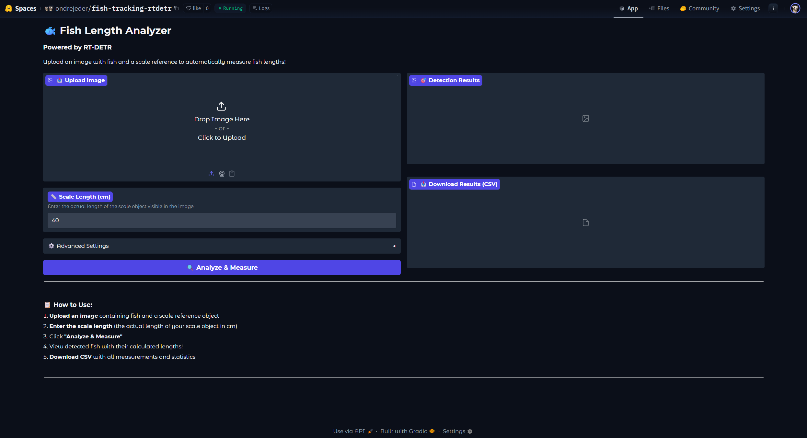
Aplikace využívající vlastní vytrénovaný ML model k detekci počtu a velikosti ryb na fotografiích s webovým rozhraním deploynutý na Hugging Face.
Projekt zde →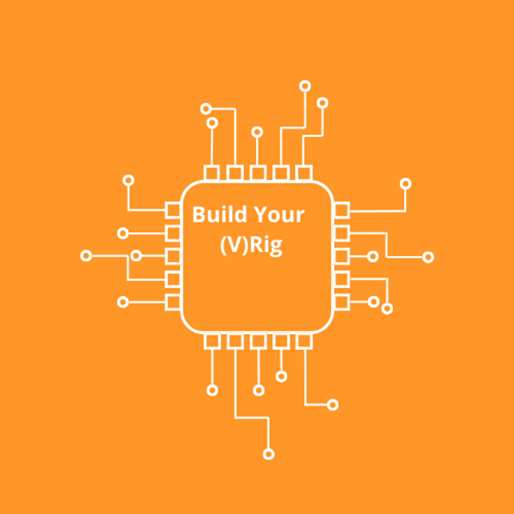
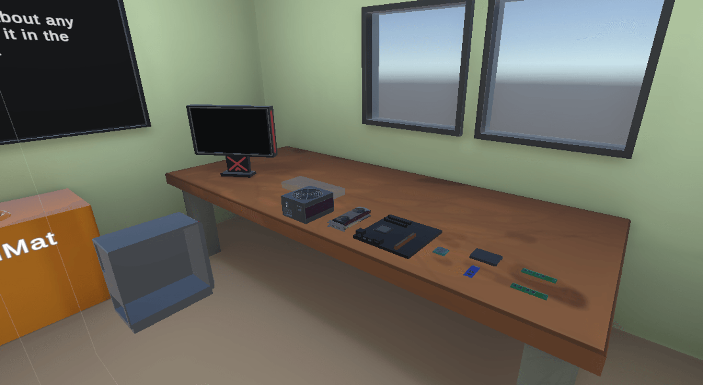
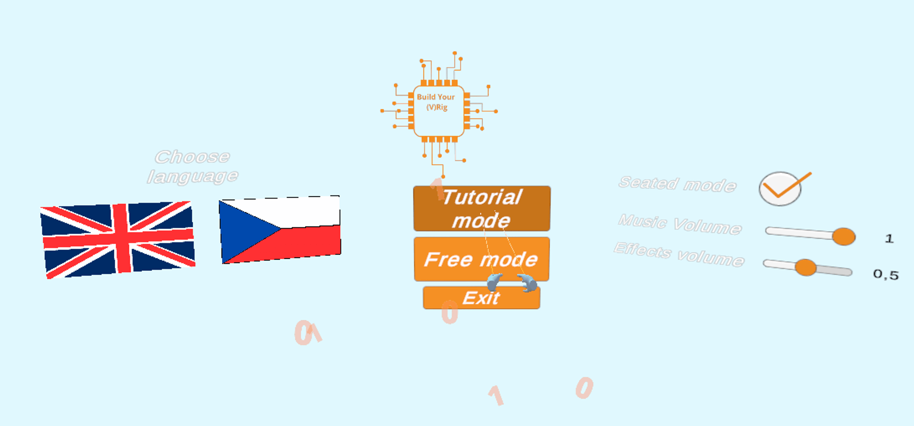
Edukativní VR hra simulující stavbu PC. Komplexní interakční systém s tutoriálem a přepínání mezi více jazyky pro standalone headsety Meta Quest. (Bakalářská práce)
Zobrazit na SideQuest → Video z aplikace →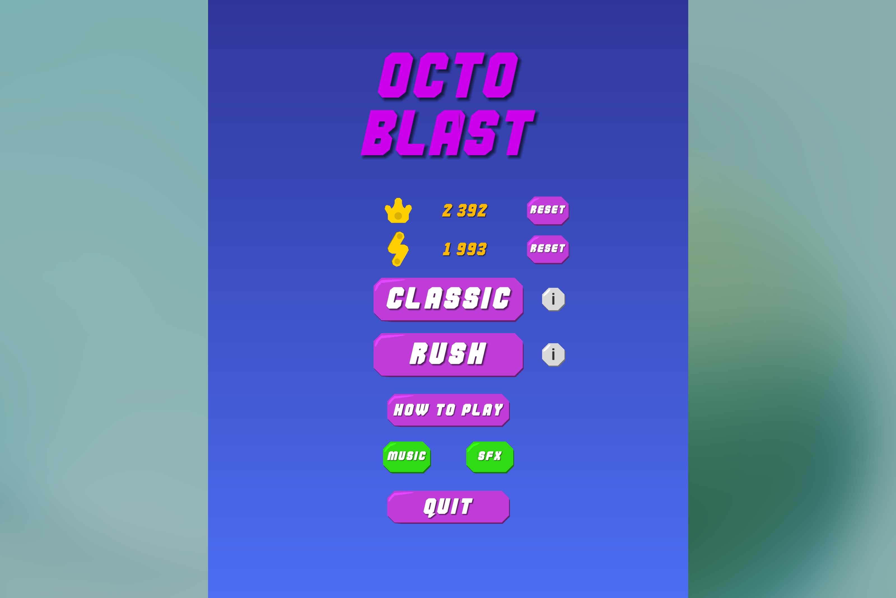
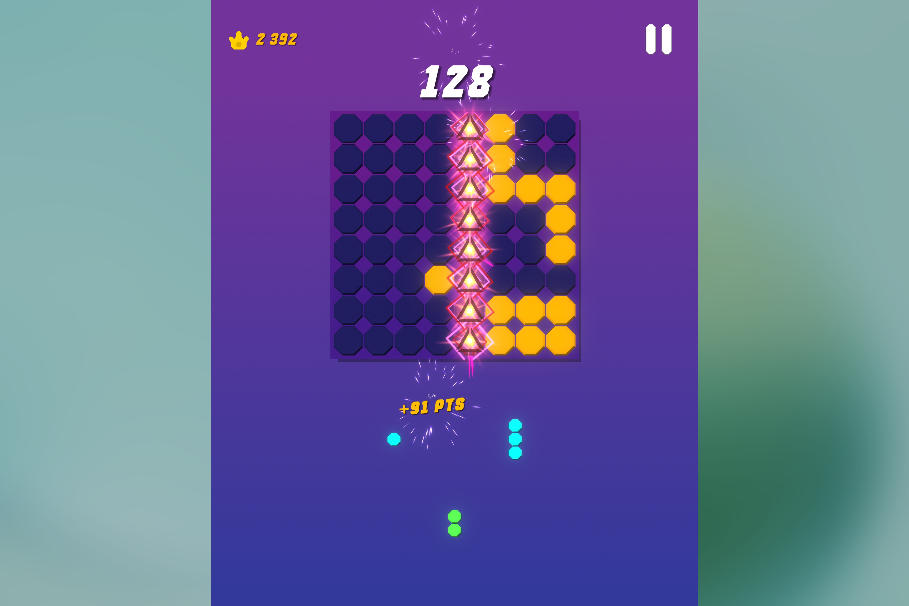
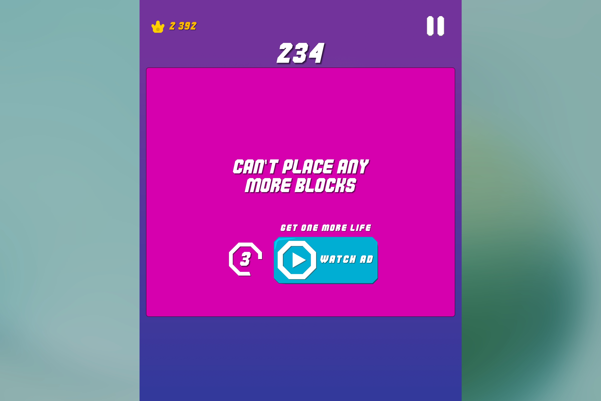
Casual mobilní hra vydaná na Google Play. Kompletní vývoj od návrhu mechanik po nasazení a monetizaci. Aktuálně je hra již delistnutá z Google Play.
Odkaz ke stažení APK na Google Disku → Odkaz na video hry →
Multiplatformní aplikace (GUI + daemon) pro vlastní synchronizaci souborů mezi zařízeními. Automatické vytváření nových buildů na Linux pomocí skriptu a WSL.